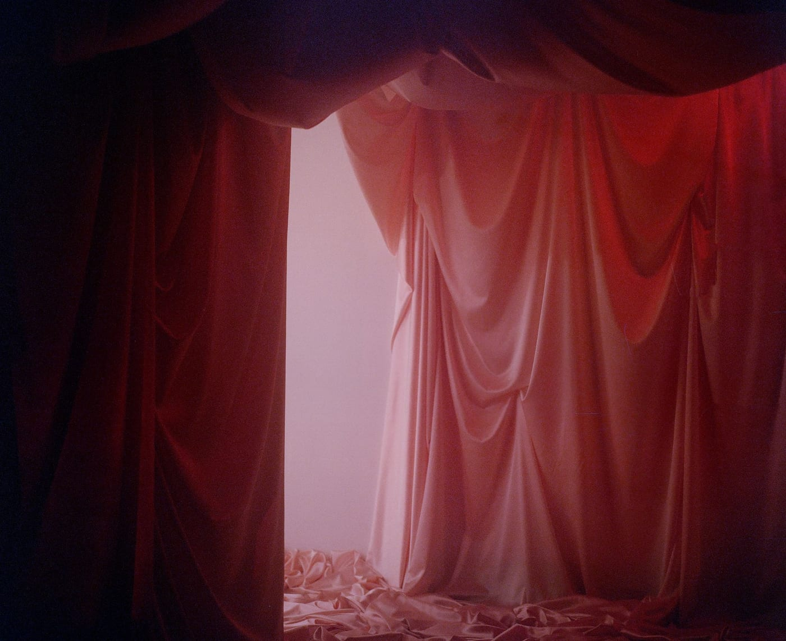
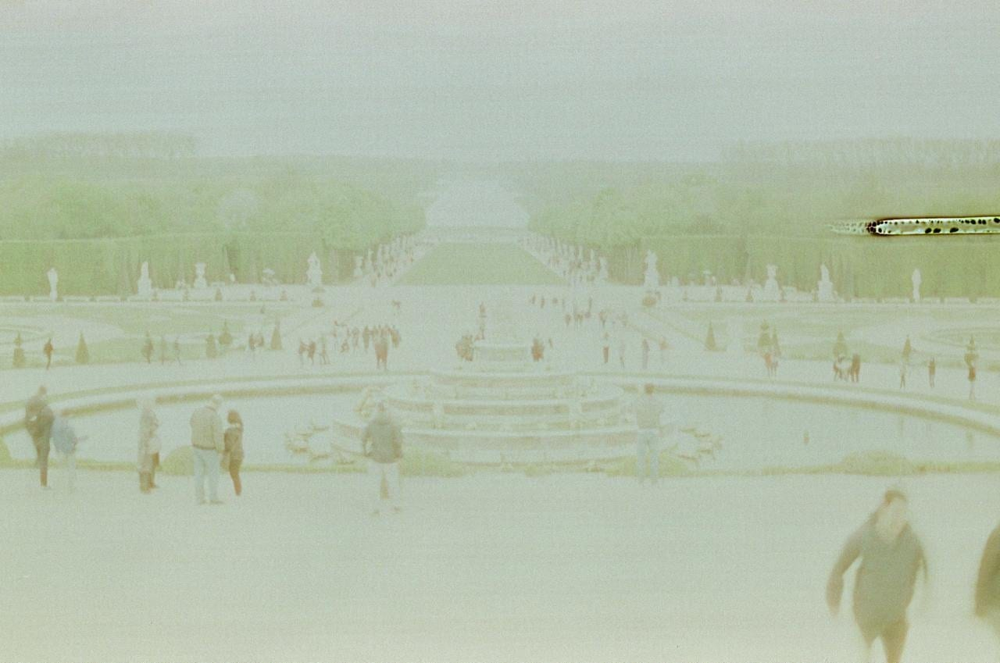
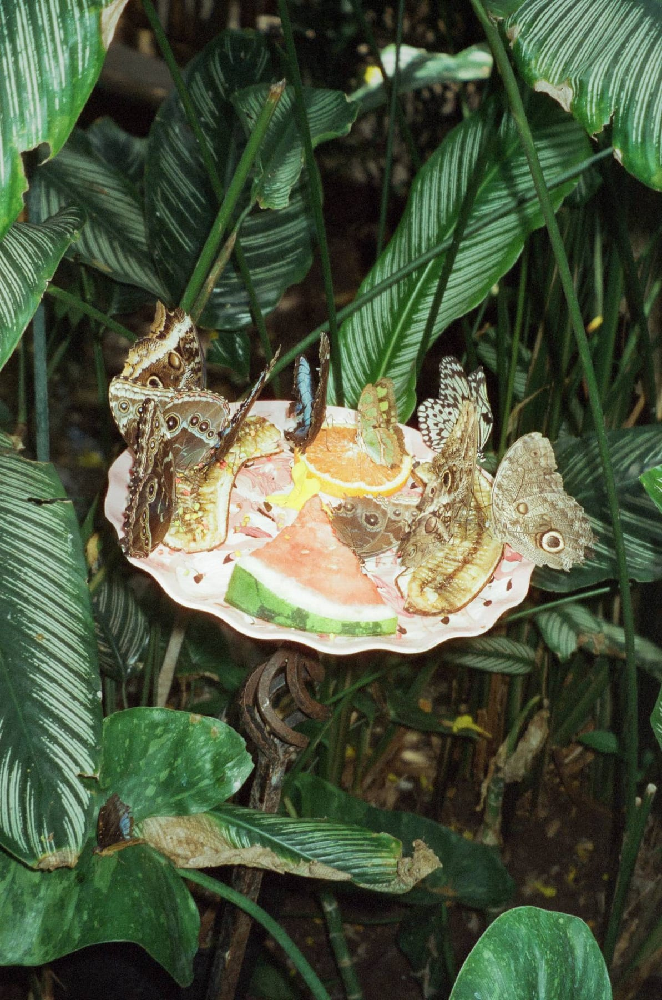
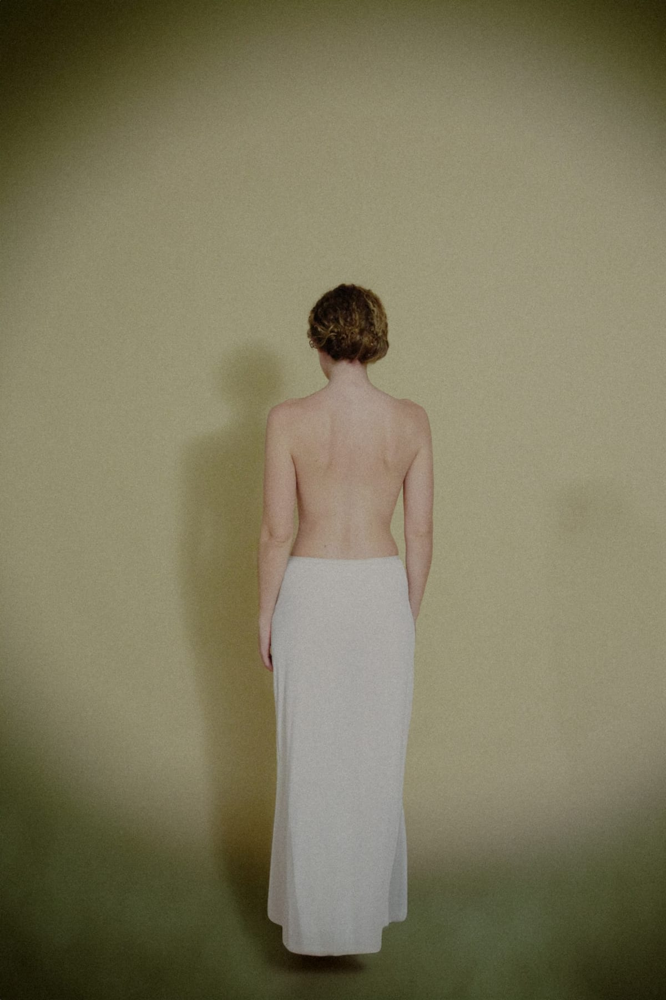

Selected Work




About
I'm Yael Iluz, an Israeli fine art photographer and visual artist based in the San Francisco Bay Area.
My journey with photography began long before it became my profession. For the past seven years, I've worked professionally in photography, gradually developing a practice that has moved beyond documenting the visible world toward exploring more personal and conceptual forms of expression.
Travel has been a significant part of my life. Over the past decade, moving between countries, cultures, and unfamiliar environments has shaped the way I see the world. These experiences have influenced not only my photography but also my understanding of identity, belonging, and the emotional connections we form with places.
My background combines technical photographic experience with an evolving fine art practice. I work with both analog and digital photography, embracing the different qualities of each medium and allowing experimentation to become part of my creative process.
I hold a Bachelor's degree in Photography and am currently pursuing my Master's degree in Photography at the Academy of Art University in San Francisco, where I continue to deepen my artistic research and develop my visual language.
My work has been featured in publications and exhibitions, including my exhibition Beyond the Looking Glass, curated by Daniel Tchetchik in San Francisco.
Photography continues to be a process of discovery for me, one that evolves alongside my experiences, questions, and the changing ways I understand the world.
Let's TalkContact